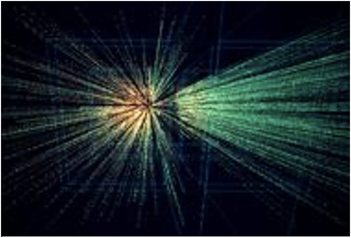

How small can we go?
The stuff you scrape off burnt toast is made primarily of atoms of carbon. But what makes up a carbon atom -- or any other atom?
The first subatomic particle to be identified was the electron, in 1898. Ten years later, Ernest Rutherford discovered that atoms have a very dense nucleus, which contains protons. In 1932, James Chadwick discovered the neutron, another particle located within the nucleus.
And so scientists thought they had found the smallest atomic building blocks. This changed in 1963 when Murray Gell-Mann proposed his quark theory. Gell-Mann believed that each proton and each neutron is made up of three even smaller particles -- particles he named quarks.
Physicists have learned a great deal over the past 100 years. For instance, it is now known that in each atom of carbon12, there are a set number of subatomic particles: six electrons, six protons, and six neutrons. The atom's nucleus and electrons are held together by the electromagnetic force -- the positive charges of the protons balances the negative charges of the electrons. Neutrons have no charge.
Atoms - The Smallest Unit Of Ordinary Matter That Forms A Chemical Element
Atoms are constructed of two types of elementary particles: electrons and quarks. Electrons occupy a space that surrounds an atom's nucleus. Each electron has an electrical charge of -1. Quarks make up protons and neutrons, which, in turn, make up an atom's nucleus. Each proton and each neutron contains three quarks. A quark is a fast-moving point of energy. There are several varieties of quarks. Protons and neutrons are composed of two types: up quarks and down quarks.
Each up quark has a charge of +2/3. Each down quark has a charge of -1/3. The sum of the charges of quarks that make up a nuclear particle determines its electrical charge.
Protons contain two up quarks and one down quark. +2/3 +2/3 -1/3 = +1
This is a proton
Neutrons contain one up quark and two down quarks. +2/3 -1/3 -1/3 = 0
The nucleus is held together by the "strong nuclear force," which is one of four fundamental forces (gravity and electromagnetism are two others). The strong force counteracts the tendency of the positively-charged protons to repel each other. It also holds together the quarks that make up the protons and neutrons.
Note: In addition to electrons and quarks, physicists have identified a number of other subatomic particles. Quantum physics describes the subatomic world as one that cannot be depicted in diagrams -- particles are not dots in space (as depicted in this feature), but are more like "dancing points of energy."
When building an atom, pay close attention to the particles' electrical charges. Protons have a charge of +1. Electrons have a charge of -1. Neutrons are neutral, as its name implies. A stable atom has a net charge of 0. In other words, it has an equal number of protons and electrons. The positive protons cancel out the negative electrons. When the number of electrons does not equal the number of protons, the atom is ionized. (The atom is then called an ion).
Do not allow your atom to become too ionized. Ions are attracted to other atoms and molecules. If your atom is too ionized, it will likely zip away from you and attach itself to a nearby atom or molecule.
An atom becomes radioactive when its nucleus contains too many or too few neutrons. Try to keep the same number of neutrons and protons as you build your atom. If the imbalance is too great, radioactive decay will occur.
Up to two electrons may exist in the atom's first shell. Up to eight electrons may exist in the atom's second shell. An electron may "drop" from an outer shell if an inner shell is not full. This results in the release of energy in the form of a photon.
Quarks - The Smallest Things We Know
This photograph shows an experiment at CERN (European Centre for Nuclear Research, at Geneva) which attempts to recreate conditions similar to those in the early universe. About 10 microseconds after the Big Bang matter must have existed in a totally different state from any we observe today. Recently physicists at CERN have recreated, for a fraction of a second this 'quark soup'.
In the experiment at CERN beams of lead nuclei are crashed together at very high energies, cramming huge amounts of energy in a tiny volume. For a fraction of a second this compresses the protons and neutrons in the lead nuclei so much that they cease to be individual particles and coalesce into a single blob of matter. Then the tiny particles inside every proton and neutron - the quarks - become free to move around the whole space occupied by the blob of matter, making a 'quark soup'.
Theory and experiment have identified three sets of fundamental particles - the quarks, leptons and gauge bosons.
So What Are Quarks?
In the 1960s physicists realized that the protons and neutrons in a nucleus are not truly elementary particles. Inside are even smaller particles called quarks. Two kinds of quark, called the 'up' quark and the 'down' quark, are sufficient to build up the protons and neutrons from which all atomic nuclei are made.
The proton contains two 'up' and one 'down' quark, while the neutron consists of one 'up' and two 'down' quarks. Add the electron, which is needed to build up atoms, and we seem to have three really fundamental particles.
But high energy experiments at CERN and other high energy laboratories around the world have shown that there are four more quarks. These exist inside particles which can only live for fractions of a second in the universe as we know it today. There are three pairs (or 'generations') of quarks:
The letters used to label the quarks are the first letters of their names: 'up', 'down', 'charmed', strange', 'top' and 'bottom'.
In addition to the six quarks there are six antiquarks - yes, antimatter really exists! Every particle has a matching 'anti-particle', and if a particle meets a matching anti-particle they will self-destruct. You can even build up an anti- hydrogen atom. The opposite can happen too - energy can materialize as equal numbers of particles and antiparticles. In the table below, the bar over a letter indicates the antiquark.
The Electron And Other Particles
How does the electron fit into this picture? It is the most familiar of a set of particles called 'leptons' which are just as fundamental as the quarks. What's more the lepton families are very similar to the quark ones:
The partner of the electron in the first generation of leptons is the neutrino, represented by the Greek letter n (nu). The neutrino has no electric charge and a very small mass. It is needed to explain a radioactive process called beta decay. There are two other electrically charged leptons, the muon and the tauon, also represented by Greek letters. Theses are similar to the electron but more massive, and each is accompanied by its own type of neutrino. Finally there is an anti-lepton for each of these six leptons.
The Bosons
Bosons are sometimes refered to as force particles. Bosons can control the interaction of physical forces, like electromagnetism and gravity.